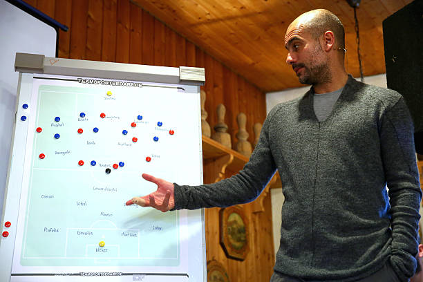

simple guide for tactical playing styles
June 23,2021

As another fascinating year of football draws to a close despite of so many interruptions, this provides us with a great opportunity to look back on some of the key playing styles from 2014. Playing Styles were first introduced in 2014 and have been keep expanding in PES 2021. Each player can only have 1 Playing Style (some have none), but up to 5 COM Playing Styles. You can't change these player traits in MyClub. With innovation always on the mind and players developing unique playing styles activates new ways to give themselves an edge in-game.
In this blog, I will be discussing about 4 Playing styles and further more will be added regularly. You might know that the explanations for each Playing Style provided by Konami is not the most helpful as they can be pretty vague. I gathered my ideas on player movement via having played lots of games since 2012. Playing Styles are only activated if players are on their compatible positions as they affect the positioning and movement of the player.
1. Goal Poacher (CF / SS) or Advance Striker
A predatory striker who plays off the shoulders of the last defender & known for scoring goals. Off the shoulder is a term we use to describe being detached from your marker and positioned behind other players or defenders. Pace and Offensive Awareness is required to beat the offside trap. Decent Ball Control is needed to receive the through ball, while Dribbling is helpful in bringing the ball towards goal after the first touch. Beating the offside trap is the priority.

Movement: Spearheads the attack, focusing on making runs to beat the defensive line. These runs can be direct to goal or diagonal runs out wide to keep the ball moving forward.
Torres, R. Lewandowski, K. Mbappe, H. Kane, Benzema, Aguero, L. Suarez, Rummenigge, Del Piero, Halaand are some of the best poachers infront of goal.
2. Dummy Runner (CF / SS / AMF)
A player who attracts the defence to create space for other players to exploit. The whole idea of a Dummy Runner is to create space for other players to play in, by making runs to drag defenders away from their position. Most importantly, high Offensive Awareness is required to make good runs to beat the defense line or drag defenders out of position.
This may involve play from the wings, or rapidly shifting into open lanes/open space when approaching the goal.Mainly using wingers, often gaps are made between defenders using the width. These gaps can be used to feed the ball to strikers. Even this works well with players who move out of position in the offense to take advantage of spaces near the Dummy Runner.
Movement: Tends to make many forward runs to drag defenders or the defense line out of position. Tends to make diagonal runs as well to open up the defense for teammates dribbling through the centre. Tends to fall back a bit before making a run, to beat the offside trap.
Muller, Firmino, Sanchez, Braithwaite, Rafael Leao, Mertens are some of the best dummy runners.
3. Fox in the Box (CF) or Poacher
A striker who lurks in the opposition 18 yard box just waiting for the ball. Goalscorer - AKA poacher but see I didn't want you all to be confused with Goal Poacher. The main job of the FITB is to score goals, be a threat in the box and is largely not required to participate in the build up. he doesn't need a strike partner, but can do well with one who helps in the build up to the attack with his technical ability or movement. They produce very minimal movement outside the box.

However, they can exploit any minimal amount of space left in the box. Players having fox in the box playing style usually rely on agility, high composure, dribbling and great finishing technique. Due to their intelligence, only one pass to them or a mistake from defender do result in goals. For fox in the box type of players we need good passers at midfield to provide them through balls and fast forwards.
Movement: Tends to remain in advanced central positions, tends to make few outward runs. Tends not to look for deeper positions to receive a pass when outside the box.
Romario, van Basten, Lukaku, Batistuta, Morientes, elber are some of the best poachers.
4. Target Man (CF) or Post Player
A player who becomes the focal point of attack by holding the ball up in an advanced position. A target man will drop slightly deep into the center with his back to the goal. The "big man" is a good option to beat a strong press from the opponent. Aerial ability is important to win headers against the most aerially strong CBs.

He can hold the ball and shield it while the other teammates catch up. Allow the wingers to run past and then use your target man to launch through balls to them that split the defence. You can also use them to lay the ball off for incoming midfielders who can strike bangers when in range. Use fast prolific wingers with good dribbling and finishing alongside him.
Movement: Tends to move into positions where he can receive direct forward passes during the build up. This includes dropping deeper, facing the ball and moving into wide positions. Pass to him and allow him to hold the ball without losing it. Keep him a bit stationary on the ball and don't dash dribble a lot with him.
Dzeko, P.Kluivert , Ibrahimovic , R. Jimenez, Giroud, Willian Jose, Milik, Joselu, L. De Jong are some of the best target man.